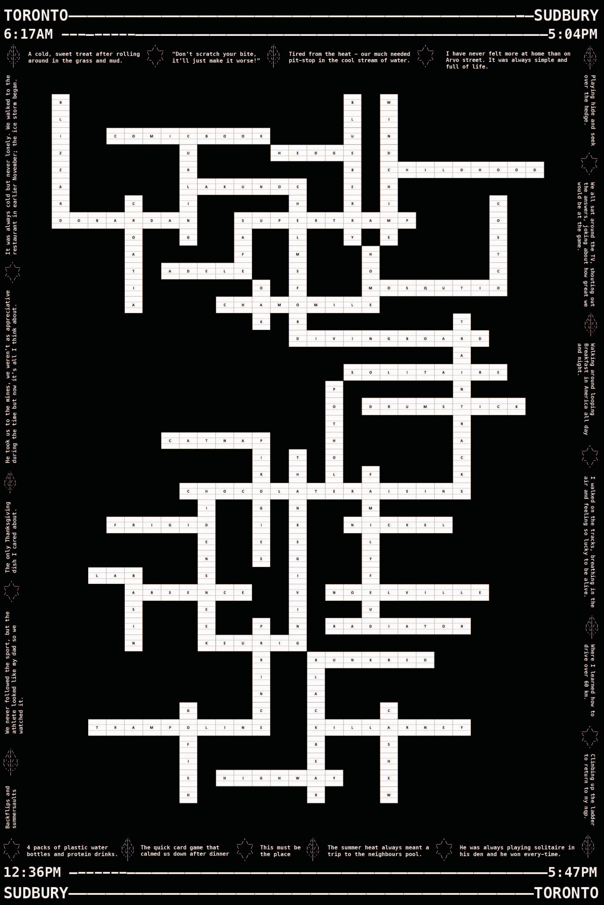

SUDBURY CROSSWORD

⋆⁺₊⋆ ☀︎ ⋆⁺₊⋆⋆⁺₊⋆ ☀︎ ⋆⁺₊⋆⋆⁺₊⋆ ☀︎ ⋆⁺₊⋆⋆⁺₊⋆ ☀︎ ⋆⁺₊⋆⋆⁺₊⋆ ☀︎ ⋆⁺₊⋆⋆⁺₊⋆ ☀︎ ⋆⁺₊⋆⋆⁺₊⋆ ☀︎ ⋆⁺₊⋆⋆⁺₊⋆ ☀︎ ⋆⁺₊⋆⋆⁺₊⋆ ☀︎ ⋆⁺₊⋆⋆⁺₊⋆ ☀︎ ⋆⁺₊⋆⋆⁺₊⋆ ☀︎ ⋆⁺₊⋆⋆⁺₊⋆ ☀︎ ⋆⁺₊⋆⋆⁺₊⋆ ☀︎ ⋆⁺₊⋆⋆⁺₊⋆ ☀︎ ⋆⁺₊⋆⋆⁺₊⋆ ☀︎ ⋆⁺₊⋆⋆⁺₊⋆ ☀︎ ⋆⁺₊⋆⋆⁺₊⋆ ☀︎ ⋆⁺₊⋆⋆
intent
When starting this project, I wanted to explore the memory of my grandparents moving away from their home in Sudbury two summers ago. This experience was emotional on many levels, as it is where I spent/had my fondest memories throughout my adult and childhood. When trying to create a composition that symbolized my experience in Sudbury, I immediately thought of a crossword puzzle- something all of us participated in when we would visit. I used a crossword maker template while thinking of words that I associated the city/ my family with. I started mapping out my puzzle in google excel where I added more “answers” along the way. Once the crossword was complete, I thought it lacked the personal approach I intended on showcasing, so I started formulating bits of written poetry to act as clues that I placed around the border of the puzzle. Overall, I am happy with the finished outcome of my poster. I believe it showcases the personal side of my memory in saying goodbye to the city and my grandparent’s house.
⋆⁺₊⋆ ☀︎ ⋆⁺₊⋆⋆⁺₊⋆ ☀︎ ⋆⁺₊⋆⋆⁺₊⋆ ☀︎ ⋆⁺₊⋆⋆⁺₊⋆ ☀︎ ⋆⁺₊⋆⋆⁺₊⋆ ☀︎ ⋆⁺₊⋆⋆⁺₊⋆ ☀︎ ⋆⁺₊⋆⋆⁺₊⋆ ☀︎ ⋆⁺₊⋆⋆⁺₊⋆ ☀︎ ⋆⁺₊⋆⋆⁺₊⋆ ☀︎ ⋆⁺₊⋆⋆⁺₊⋆ ☀︎ ⋆⁺₊⋆⋆⁺₊⋆ ☀︎ ⋆⁺₊⋆⋆⁺₊⋆ ☀︎ ⋆⁺₊⋆⋆⁺₊⋆ ☀︎ ⋆⁺₊⋆⋆⁺₊⋆ ☀︎ ⋆⁺₊⋆⋆⁺₊⋆ ☀︎ ⋆⁺₊⋆⋆⁺₊⋆ ☀︎ ⋆⁺₊⋆⋆⁺₊⋆ ☀︎ ⋆⁺₊⋆⋆
process
During my process, I started taking screenshots of the city on google maps while compiling imagery of songs and text into a word document. I felt that the composition lacked the personal touch I wanted to convey, so I dove deeper into what memories were most meaningful when visiting my grandparents- eventually leading me in creating a crossword puzzle. I started creating illustrations within sublime text where I drew my grandparent’s house and a crossword puzzle. I liked the idea of incorporating text into my poster along with the crossword but was not sure if I wanted to include clues or answers. Once I completed my crossword, I decided it needed something more to convey meaning regarding my experience, so I started incorporating bits of written elements within the puzzle, which led to mimicking a version of a journal entry. Overall, the process of creating this poster has been beneficial in showcasing my experience in saying goodbye to my second home.
⋆⁺₊⋆ ☀︎ ⋆⁺₊⋆⋆⁺₊⋆ ☀︎ ⋆⁺₊⋆⋆⁺₊⋆ ☀︎ ⋆⁺₊⋆⋆⁺₊⋆ ☀︎ ⋆⁺₊⋆⋆⁺₊⋆ ☀︎ ⋆⁺₊⋆⋆⁺₊⋆ ☀︎ ⋆⁺₊⋆⋆⁺₊⋆ ☀︎ ⋆⁺₊⋆⋆⁺₊⋆ ☀︎ ⋆⁺₊⋆⋆⁺₊⋆ ☀︎ ⋆⁺₊⋆⋆⁺₊⋆ ☀︎ ⋆⁺₊⋆⋆⁺₊⋆ ☀︎ ⋆⁺₊⋆⋆⁺₊⋆ ☀︎ ⋆⁺₊⋆⋆⁺₊⋆ ☀︎ ⋆⁺₊⋆⋆⁺₊⋆ ☀︎ ⋆⁺₊⋆⋆⁺₊⋆ ☀︎ ⋆⁺₊⋆⋆⁺₊⋆ ☀︎ ⋆⁺₊⋆⋆⁺₊⋆ ☀︎ ⋆⁺₊⋆⋆
We got a little silly once and decided to Christmas carol in September, here
Countless songs remind me of my family and my home in Sudbury; one that quickly comes to mind is, here...ever heard of it?
⋆⁺₊⋆ ☀︎ ⋆⁺₊⋆⋆⁺₊⋆ ☀︎ ⋆⁺₊⋆⋆⁺₊⋆ ☀︎ ⋆⁺₊⋆⋆⁺₊⋆ ☀︎ ⋆⁺₊⋆⋆⁺₊⋆ ☀︎ ⋆⁺₊⋆⋆⁺₊⋆ ☀︎ ⋆⁺₊⋆⋆⁺₊⋆ ☀︎ ⋆⁺₊⋆⋆⁺₊⋆ ☀︎ ⋆⁺₊⋆⋆⁺₊⋆ ☀︎ ⋆⁺₊⋆⋆⁺₊⋆ ☀︎ ⋆⁺₊⋆⋆⁺₊⋆ ☀︎ ⋆⁺₊⋆⋆⁺₊⋆ ☀︎ ⋆⁺₊⋆⋆⁺₊⋆ ☀︎ ⋆⁺₊⋆⋆⁺₊⋆ ☀︎ ⋆⁺₊⋆⋆⁺₊⋆ ☀︎ ⋆⁺₊⋆⋆⁺₊⋆ ☀︎ ⋆⁺₊⋆⋆⁺₊⋆ ☀︎ ⋆⁺₊⋆⋆